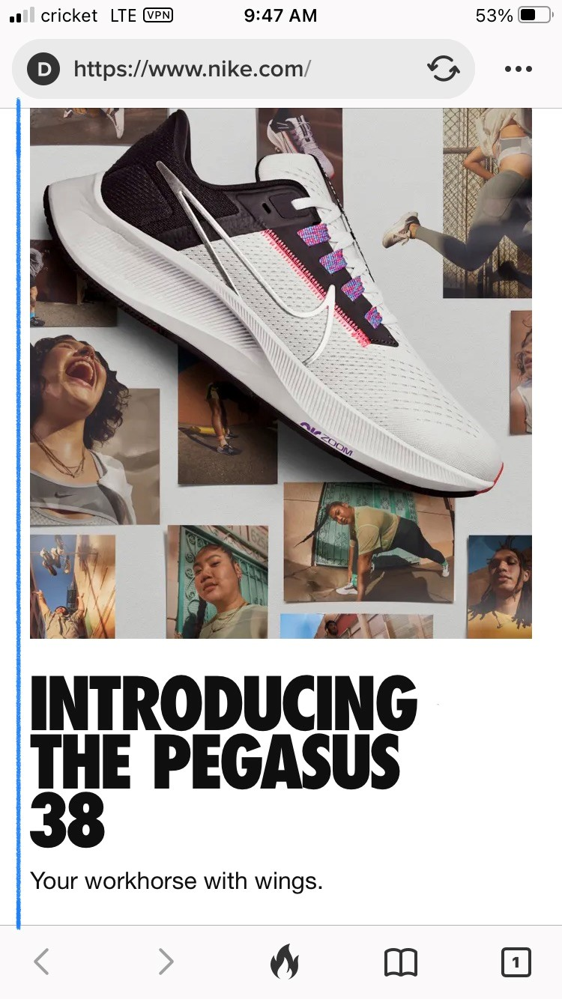

PARC: Alignment
Nike
nike.com Nike's website has a flush-left alignment which unifies and connects each element well. There is an invisible line from the top left of the website through the bottom left of the website. I drew the blue line so that it is easy to see what the "invisible line" is. This straight line gives the website strength and sophistication.